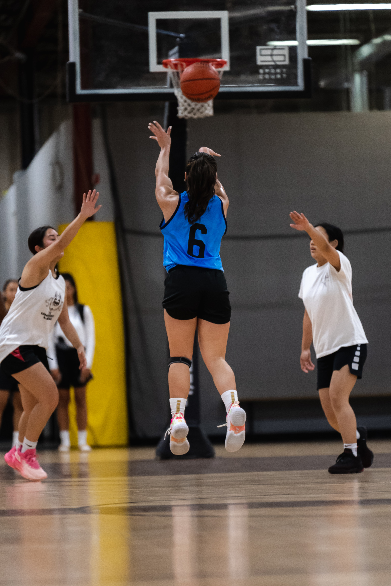
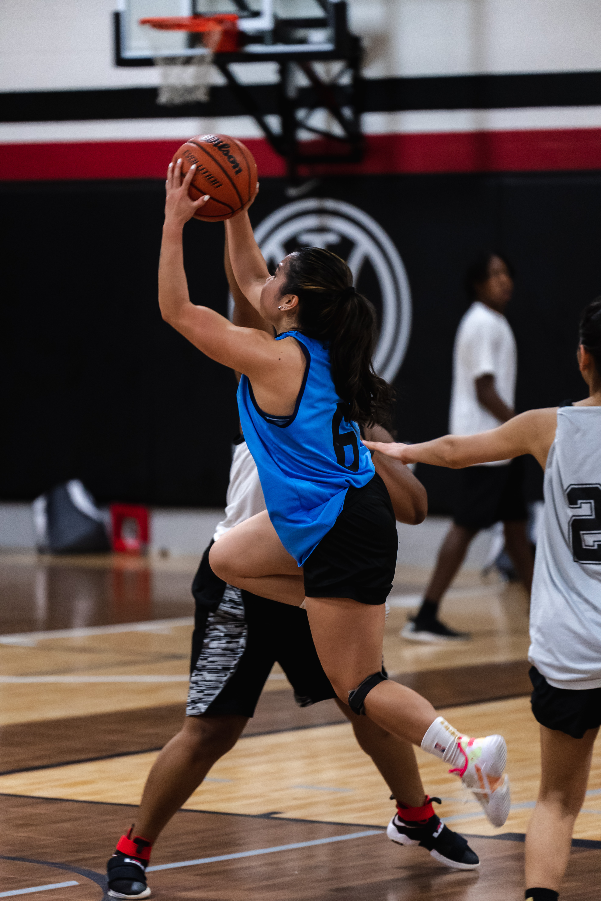
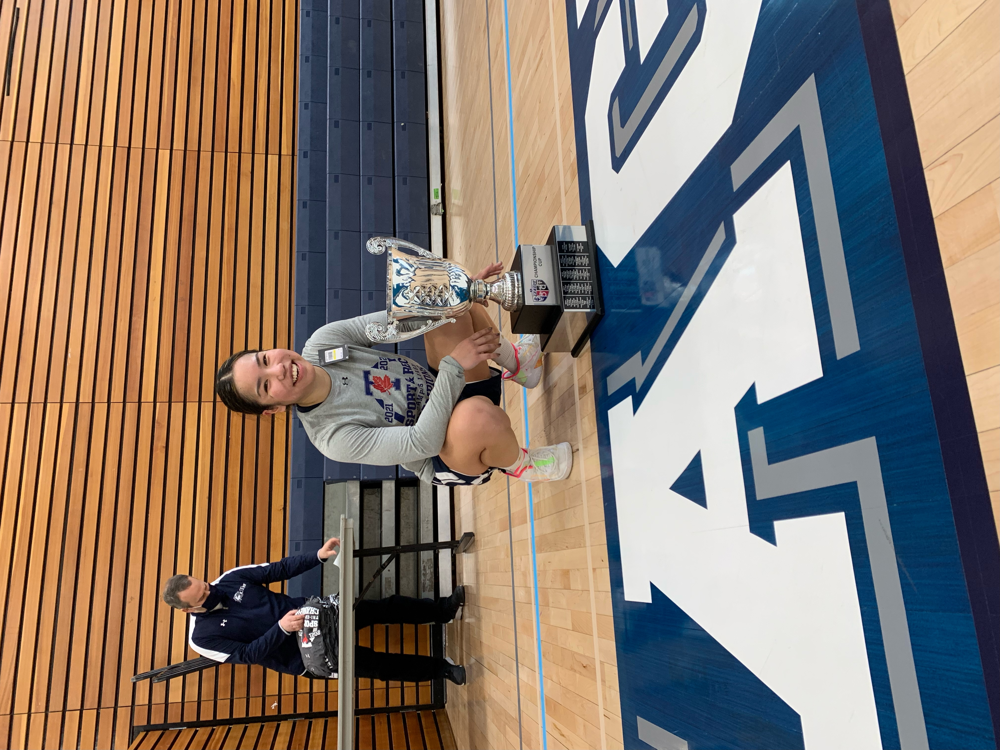
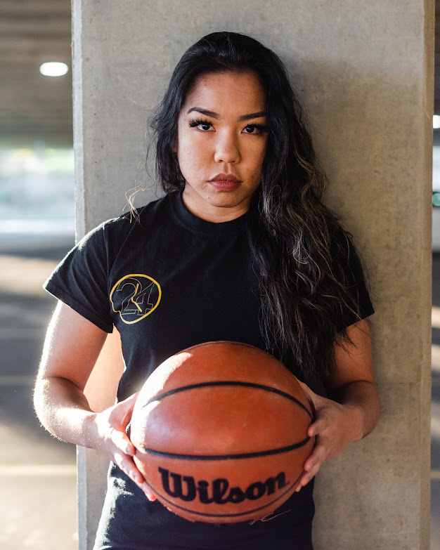
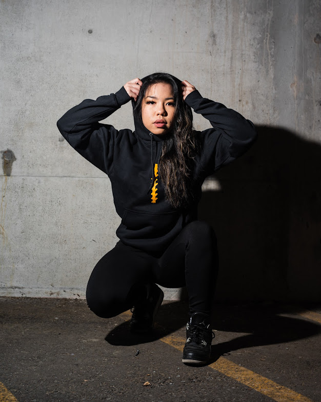
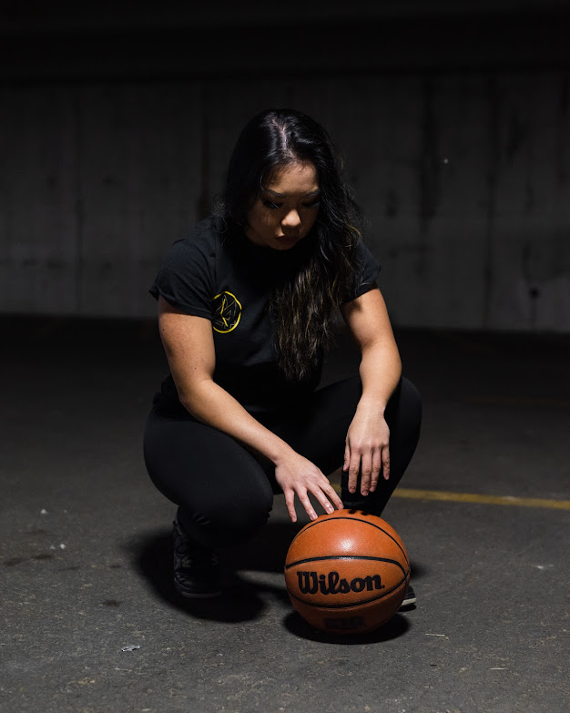
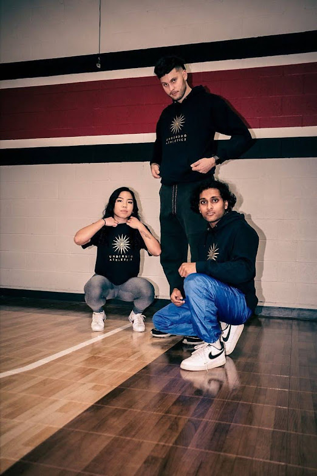
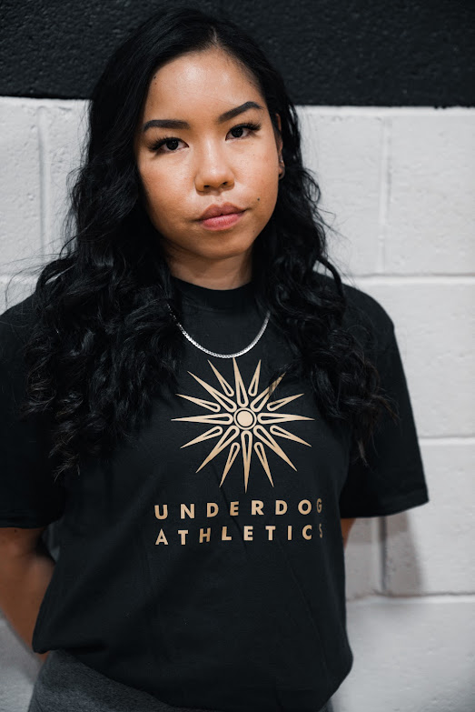
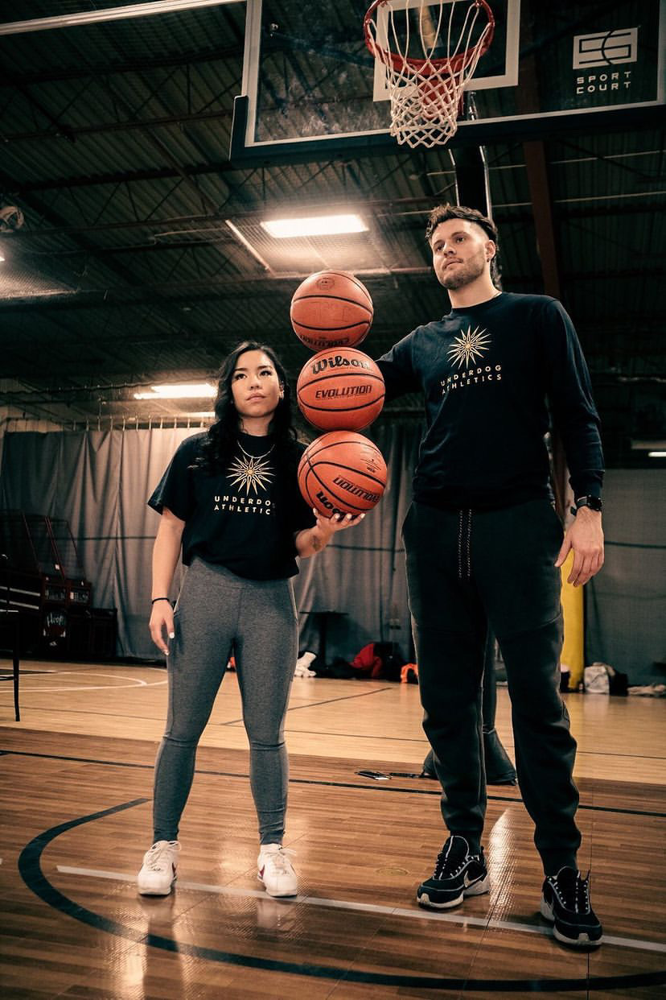
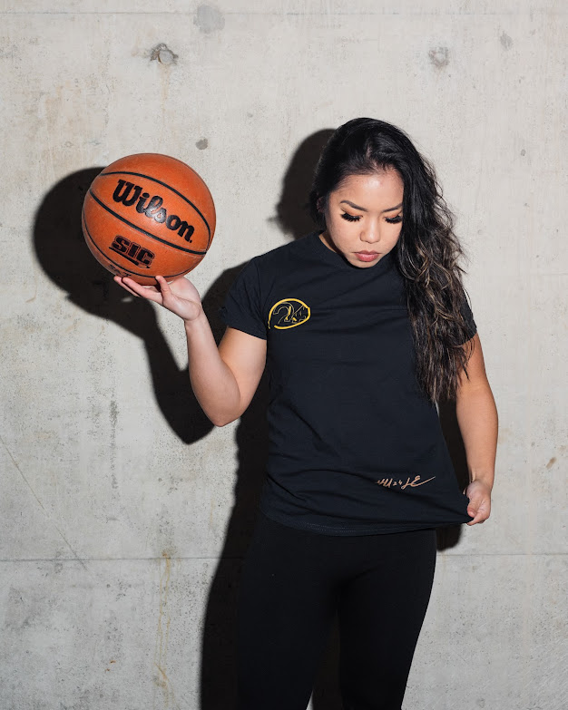

Media Album
All things Photos and Videos


Underdog League Season 2
Taken by @3rdeyeKav


Underdog League Season 1
Taken by @NSJR


UTM Tri-Campus
Taken by @UTMAthletics
UTM vs. Sheridan Playoff Game 2020



Hu24le
Taken by @NSRJ



Underdog Athletics
Taken by @NSJR
